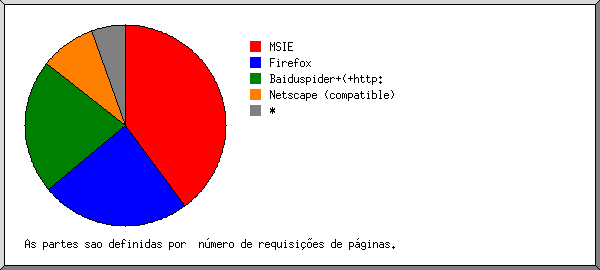

Estatísticas do Servidor Web de mundosdemirr.com
Estatísticas do Servidor Web de mundosdemirr.com
Começo do programa em Qui-30-Nov-2006 23:32.
Análise de requisições desde Qui-23-Nov-2006 21:12 até Qui-30-Nov-2006 22:08 (7,04 dias).
Estatísticas do Servidor Web de mundosdemirr.comComeço do programa em Qui-30-Nov-2006 23:32.
Análise de requisições desde Qui-23-Nov-2006 21:12 até Qui-30-Nov-2006 22:08 (7,04 dias).
(Ir a: Início | Sumário Geral | Relatório Mensal | Resumo Diário | Resumo Horário | Relatório de Domínios | Relatório de organizações | Relatório de referência falhada | Relatório do site de referência | Relatório de Browsers | Resumo de Browsers | Relatório de Sistemas Operacionais | Relatório de Códigos de Estado | Relatório de Tamanho de Arquivo | Relatório de Tipos de Arquivo | Relatório de Diretórios | Relatório de Requisições)
Os valores entre parêntesis referem-se aos 7 dias até 30-Nov-2006 23:32.
Requisições atendidas: 3.310 (3.289)
Número médio de requisições atendidas por dia: 470 (469)
Pedidos de páginas atendidas: 62 (41)
Número médio de requisições de páginas atendidas por dia: 8 (5)
Requisições que falharam: 40 (2)
Requisições redirecionadas: 11 (2)
Arquivos diferentes solicitados: 37 (26)
Máquinas diferentes atendidas: 7 (3)
Tráfego total: 6,70 megabytes (6,62 megabytes)
Tráfego médio transferido por dia: 974,76 kilobytes (968,38 kilobytes)
(Ir a: Início | Sumário Geral | Relatório Mensal | Resumo Diário | Resumo Horário | Relatório de Domínios | Relatório de organizações | Relatório de referência falhada | Relatório do site de referência | Relatório de Browsers | Resumo de Browsers | Relatório de Sistemas Operacionais | Relatório de Códigos de Estado | Relatório de Tamanho de Arquivo | Relatório de Tipos de Arquivo | Relatório de Diretórios | Relatório de Requisições)
Cada unidade ( ) representa 2 requisições de páginas ou fração.
) representa 2 requisições de páginas ou fração.
| mês | N.req | Pags. | |
|---|---|---|---|
| Nov 2006 | 3310 | 62 |     |
Mês mais movimentado: Nov 2006 (62 requisições de páginas).
(Ir a: Início | Sumário Geral | Relatório Mensal | Resumo Diário | Resumo Horário | Relatório de Domínios | Relatório de organizações | Relatório de referência falhada | Relatório do site de referência | Relatório de Browsers | Resumo de Browsers | Relatório de Sistemas Operacionais | Relatório de Códigos de Estado | Relatório de Tamanho de Arquivo | Relatório de Tipos de Arquivo | Relatório de Diretórios | Relatório de Requisições)
Cada unidade () representa 1 requisição de uma página.
| dia | N.req | Pags. | |
|---|---|---|---|
| Dom | 7 | 7 | |
| Seg | 0 | 0 | |
| Ter | 374 | 4 | |
| Qua | 2362 | 10 | |
| Qui | 562 | 36 |  |
| Sex | 5 | 5 | |
| Sab | 0 | 0 |
(Ir a: Início | Sumário Geral | Relatório Mensal | Resumo Diário | Resumo Horário | Relatório de Domínios | Relatório de organizações | Relatório de referência falhada | Relatório do site de referência | Relatório de Browsers | Resumo de Browsers | Relatório de Sistemas Operacionais | Relatório de Códigos de Estado | Relatório de Tamanho de Arquivo | Relatório de Tipos de Arquivo | Relatório de Diretórios | Relatório de Requisições)
Cada unidade () representa 1 requisição de uma página.
| h | N.req | Pags. | |
|---|---|---|---|
| 0 | 590 | 1 | |
| 1 | 0 | 0 | |
| 2 | 0 | 0 | |
| 3 | 0 | 0 | |
| 4 | 0 | 0 | |
| 5 | 0 | 0 | |
| 6 | 0 | 0 | |
| 7 | 0 | 0 | |
| 8 | 0 | 0 | |
| 9 | 0 | 0 | |
| 10 | 0 | 0 | |
| 11 | 238 | 7 | |
| 12 | 281 | 6 | |
| 13 | 5 | 5 | |
| 14 | 0 | 0 | |
| 15 | 0 | 0 | |
| 16 | 0 | 0 | |
| 17 | 0 | 0 | |
| 18 | 0 | 0 | |
| 19 | 0 | 0 | |
| 20 | 0 | 0 | |
| 21 | 573 | 7 | |
| 22 | 693 | 11 | |
| 23 | 930 | 25 | |
(Ir a: Início | Sumário Geral | Relatório Mensal | Resumo Diário | Resumo Horário | Relatório de Domínios | Relatório de organizações | Relatório de referência falhada | Relatório do site de referência | Relatório de Browsers | Resumo de Browsers | Relatório de Sistemas Operacionais | Relatório de Códigos de Estado | Relatório de Tamanho de Arquivo | Relatório de Tipos de Arquivo | Relatório de Diretórios | Relatório de Requisições)
Mostrando os domínios, ordenados por quantidade de tráfego.
| N.req | %bytes | domínio |
|---|---|---|
| 3310 | 100% | [endereço IP não resolvido] |
(Ir a: Início | Sumário Geral | Relatório Mensal | Resumo Diário | Resumo Horário | Relatório de Domínios | Relatório de organizações | Relatório de referência falhada | Relatório do site de referência | Relatório de Browsers | Resumo de Browsers | Relatório de Sistemas Operacionais | Relatório de Códigos de Estado | Relatório de Tamanho de Arquivo | Relatório de Tipos de Arquivo | Relatório de Diretórios | Relatório de Requisições)

Mostrando as organizações, ordenadas por número de requisições.
| N.req | %bytes | organização |
|---|---|---|
| 2470 | 63,94% | 201.83 |
| 519 | 7,68% | 201.26 |
| 312 | 27,39% | 201.81 |
| 5 | 0,55% | 64.246 |
| 4 | 0,44% | 216.145 |
(Ir a: Início | Sumário Geral | Relatório Mensal | Resumo Diário | Resumo Horário | Relatório de Domínios | Relatório de organizações | Relatório de referência falhada | Relatório do site de referência | Relatório de Browsers | Resumo de Browsers | Relatório de Sistemas Operacionais | Relatório de Códigos de Estado | Relatório de Tamanho de Arquivo | Relatório de Tipos de Arquivo | Relatório de Diretórios | Relatório de Requisições)

Mostrando os URLs de referência, ordenados por número de requisições que falharam.
| N.req | URL |
|---|---|
| 12 | http://www.mundosdemirr.com/novo/index.php |
| 9 | http://www.whois.sc/ |
(Ir a: Início | Sumário Geral | Relatório Mensal | Resumo Diário | Resumo Horário | Relatório de Domínios | Relatório de organizações | Relatório de referência falhada | Relatório do site de referência | Relatório de Browsers | Resumo de Browsers | Relatório de Sistemas Operacionais | Relatório de Códigos de Estado | Relatório de Tamanho de Arquivo | Relatório de Tipos de Arquivo | Relatório de Diretórios | Relatório de Requisições)

Mostrando os sites de referência, ordenados por número de requisições.
| N.req | site |
|---|---|
| 3064 | http://www.mundosdemirr.com/ |
| 9 | http://www.whois.sc/ |
(Ir a: Início | Sumário Geral | Relatório Mensal | Resumo Diário | Resumo Horário | Relatório de Domínios | Relatório de organizações | Relatório de referência falhada | Relatório do site de referência | Relatório de Browsers | Resumo de Browsers | Relatório de Sistemas Operacionais | Relatório de Códigos de Estado | Relatório de Tamanho de Arquivo | Relatório de Tipos de Arquivo | Relatório de Diretórios | Relatório de Requisições)

Mostrando os browsers com pelo menos 1 requisição de uma página, ordenados por número de requisições de páginas.
| N.req | Pags. | Browser |
|---|---|---|
| 240 | 20 | Mozilla/5.0 (Windows; U; Windows NT 5.1; pt-BR; rv:1.8.1) Gecko/20061010 Firefox/2.0 |
| 2470 | 15 | Mozilla/4.0 (compatible; MSIE 6.0; Windows NT 5.1; SV1) |
| 312 | 13 | Mozilla/5.0 (Windows; U; Windows NT 5.1; en-US; rv:1.8.0.8) Gecko/20061025 Firefox/1.5.0.8 |
| 9 | 9 | SurveyBot/2.3 (Whois Source) |
| 72 | 5 | Mozilla/4.0 (compatible; MSIE 6.0; Windows NT 5.1; SV1; EmbeddedWB 14,52 from: http://www.bsalsa.com/ EmbeddedWB 14,52; .NET CLR 2.0.50727) |
| 207 | 0 | [não listados: 1 Browser] |
(Ir a: Início | Sumário Geral | Relatório Mensal | Resumo Diário | Resumo Horário | Relatório de Domínios | Relatório de organizações | Relatório de referência falhada | Relatório do site de referência | Relatório de Browsers | Resumo de Browsers | Relatório de Sistemas Operacionais | Relatório de Códigos de Estado | Relatório de Tamanho de Arquivo | Relatório de Tipos de Arquivo | Relatório de Diretórios | Relatório de Requisições)

Mostrando os browsers com pelo menos 1 requisição de uma página, ordenados por número de requisições de páginas.
| no. | N.req | Pags. | Browser |
|---|---|---|---|
| 1 | 552 | 33 | Firefox |
| 2 | 2749 | 20 | MSIE |
| 3 | 9 | 9 | SurveyBot |
(Ir a: Início | Sumário Geral | Relatório Mensal | Resumo Diário | Resumo Horário | Relatório de Domínios | Relatório de organizações | Relatório de referência falhada | Relatório do site de referência | Relatório de Browsers | Resumo de Browsers | Relatório de Sistemas Operacionais | Relatório de Códigos de Estado | Relatório de Tamanho de Arquivo | Relatório de Tipos de Arquivo | Relatório de Diretórios | Relatório de Requisições)

Mostrando os Sistemas Operacionais, ordenados por número de requisições de páginas.
| no. | N.req | Pags. | Sistema Operacional |
|---|---|---|---|
| 1 | 3301 | 53 | Windows |
| 3301 | 53 | Windows XP | |
| 2 | 9 | 9 | Sistema Operacional desconhecido |
(Ir a: Início | Sumário Geral | Relatório Mensal | Resumo Diário | Resumo Horário | Relatório de Domínios | Relatório de organizações | Relatório de referência falhada | Relatório do site de referência | Relatório de Browsers | Resumo de Browsers | Relatório de Sistemas Operacionais | Relatório de Códigos de Estado | Relatório de Tamanho de Arquivo | Relatório de Tipos de Arquivo | Relatório de Diretórios | Relatório de Requisições)

Mostrando os códigos de estado, por ordem numérica.
| N.req | cod. estado |
|---|---|
| 694 | 200 OK |
| 9 | 206 Partial content |
| 5 | 301 Document moved permanently |
| 6 | 302 Document found elsewhere |
| 2607 | 304 Not modified since last retrieval |
| 40 | 404 Document not found |
(Ir a: Início | Sumário Geral | Relatório Mensal | Resumo Diário | Resumo Horário | Relatório de Domínios | Relatório de organizações | Relatório de referência falhada | Relatório do site de referência | Relatório de Browsers | Resumo de Browsers | Relatório de Sistemas Operacionais | Relatório de Códigos de Estado | Relatório de Tamanho de Arquivo | Relatório de Tipos de Arquivo | Relatório de Diretórios | Relatório de Requisições)

| tamanho | N.req | %bytes |
|---|---|---|
| 0 | 2607 | |
| 1B- 10B | 0 | |
| 11B- 100B | 0 | |
| 101B- 1kB | 65 | 0,49% |
| 1kB- 10kB | 505 | 37,23% |
| 10kB-100kB | 131 | 58,97% |
| 100kB- 1MB | 2 | 3,32% |
(Ir a: Início | Sumário Geral | Relatório Mensal | Resumo Diário | Resumo Horário | Relatório de Domínios | Relatório de organizações | Relatório de referência falhada | Relatório do site de referência | Relatório de Browsers | Resumo de Browsers | Relatório de Sistemas Operacionais | Relatório de Códigos de Estado | Relatório de Tamanho de Arquivo | Relatório de Tipos de Arquivo | Relatório de Diretórios | Relatório de Requisições)

Mostrando as extensões com pelo menos 0,1% do tráfego, ordenadas por quantidade de tráfego.
| N.req | %bytes | extensão |
|---|---|---|
| 2198 | 60,67% | .jpg |
| 373 | 30,87% | .php |
| 62 | 4,79% | [diretórios] |
| 677 | 3,67% | .gif |
(Ir a: Início | Sumário Geral | Relatório Mensal | Resumo Diário | Resumo Horário | Relatório de Domínios | Relatório de organizações | Relatório de referência falhada | Relatório do site de referência | Relatório de Browsers | Resumo de Browsers | Relatório de Sistemas Operacionais | Relatório de Códigos de Estado | Relatório de Tamanho de Arquivo | Relatório de Tipos de Arquivo | Relatório de Diretórios | Relatório de Requisições)

Mostrando os diretórios com pelo menos 0,01% do tráfego, ordenados por quantidade de tráfego.
| N.req | %bytes | diretório |
|---|---|---|
| 3274 | 97,27% | /novo/ |
| 36 | 2,73% | [diretório raiz] |
(Ir a: Início | Sumário Geral | Relatório Mensal | Resumo Diário | Resumo Horário | Relatório de Domínios | Relatório de organizações | Relatório de referência falhada | Relatório do site de referência | Relatório de Browsers | Resumo de Browsers | Relatório de Sistemas Operacionais | Relatório de Códigos de Estado | Relatório de Tamanho de Arquivo | Relatório de Tipos de Arquivo | Relatório de Diretórios | Relatório de Requisições)

Mostrando os arquivos com pelo menos 20 requisições, ordenados por número de requisições.
| N.req | %bytes | ult. horario | arquivo |
|---|---|---|---|
| 362 | 30,75% | 30/Nov/2006 22:08 | /novo/index.php |
| 43 | 5,59% | 30/Nov/2006 22:07 | /novo/index.php?pg=livros |
| 32 | 3,56% | 30/Nov/2006 22:07 | /novo/index.php?pg=pre_venda |
| 32 | 2,92% | 29/Nov/2006 23:12 | /novo/index.php?pg=arquivo&data=06-11 |
| 30 | 3,86% | 30/Nov/2006 22:08 | /novo/index.php?pg=o_autor |
| 22 | 1,91% | 30/Nov/2006 12:03 | /novo/index.php?pg=arquivo&data=06-12 |
| 18 | 1,19% | 30/Nov/2006 22:07 | /novo/index.php?pg=noticias |
| 12 | 0,79% | 30/Nov/2006 22:07 | /novo/index.php?pg=agradecimentos |
| 269 | 38,82% | 30/Nov/2006 22:07 | /novo/bg_paper_mid.jpg |
| 251 | 0,59% | 30/Nov/2006 22:07 | /novo/menu_noticias.jpg |
| 247 | 0,07% | 30/Nov/2006 22:07 | /novo/divider.gif |
| 247 | 4,84% | 30/Nov/2006 22:07 | /novo/bg_paper_bot.jpg |
| 246 | 13,07% | 30/Nov/2006 22:07 | /novo/head.jpg |
| 246 | 0,64% | 30/Nov/2006 22:07 | /novo/menu_agradecimentos.jpg |
| 245 | 0,62% | 30/Nov/2006 22:07 | /novo/menu_livros.jpg |
| 209 | 0,46% | 29/Nov/2006 23:23 | /novo/menu_prevenda.jpg |
| 209 | 0,43% | 29/Nov/2006 23:23 | /novo/menu_oautor.jpg |
| 185 | 0,20% | 30/Nov/2006 22:07 | /novo/arquivos.gif |
| 164 | 0,06% | 30/Nov/2006 22:07 | /novo/icon.gif |
| 73 | 0,02% | 30/Nov/2006 22:07 | /novo/divider2.gif |
| 68 | 0,26% | 30/Nov/2006 22:07 | /novo/bg_menu_foot.jpg |
| 66 | 0,26% | 30/Nov/2006 22:07 | /novo/bg_menu_head.jpg |
| 62 | 0,23% | 30/Nov/2006 22:07 | /novo/bg_menu_body.jpg |
| 42 | 0,19% | 30/Nov/2006 22:07 | /novo/menu_o_autor.jpg |
| 37 | 0,21% | 30/Nov/2006 22:07 | /novo/menu_pre_venda.jpg |
| 36 | 2,73% | 30/Nov/2006 22:07 | / |
| 26 | 2,06% | 30/Nov/2006 22:07 | /novo/ |
| 20 | 3,48% | 29/Nov/2006 22:09 | [não listados: 3 arquivos] |